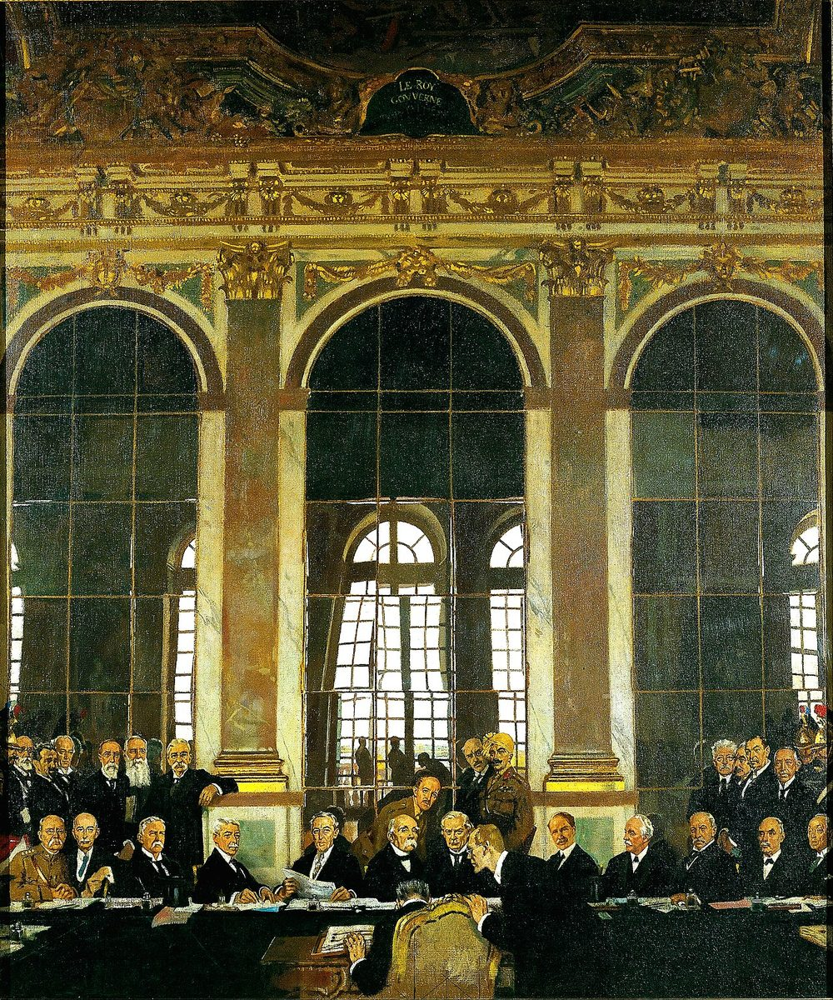
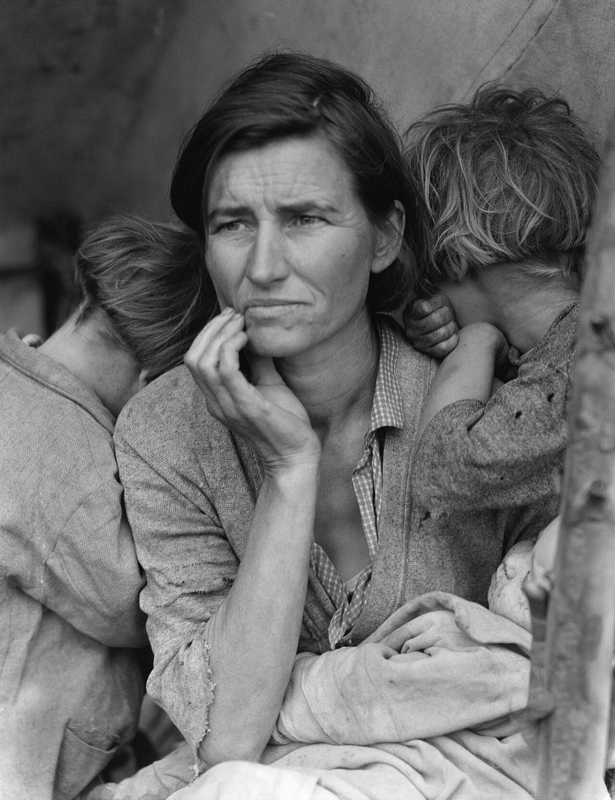
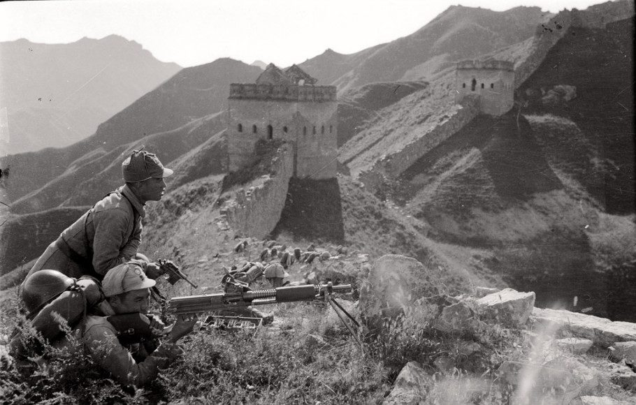
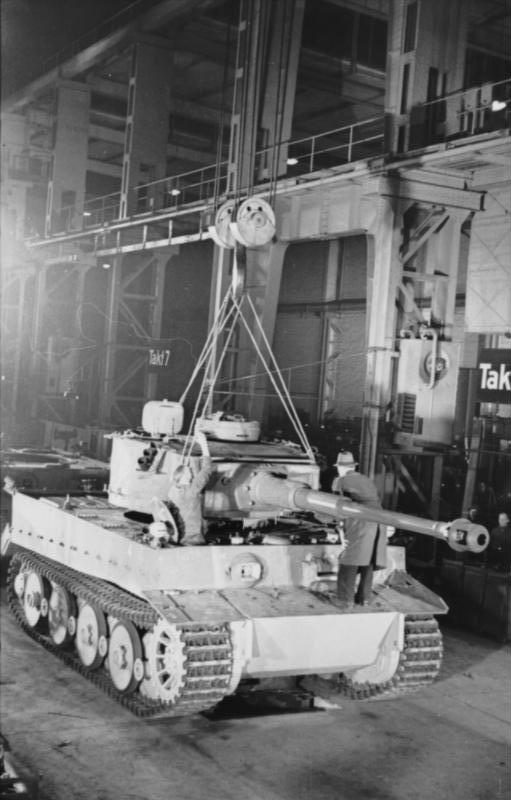
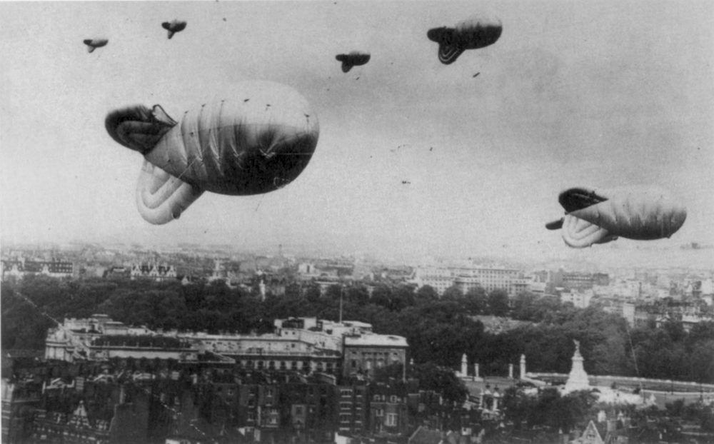
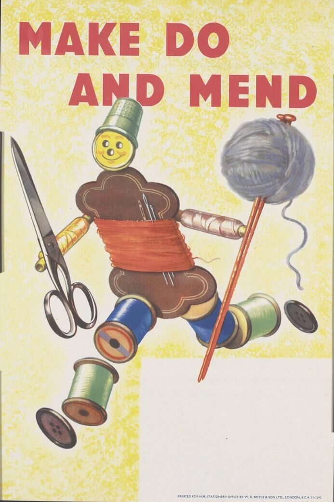
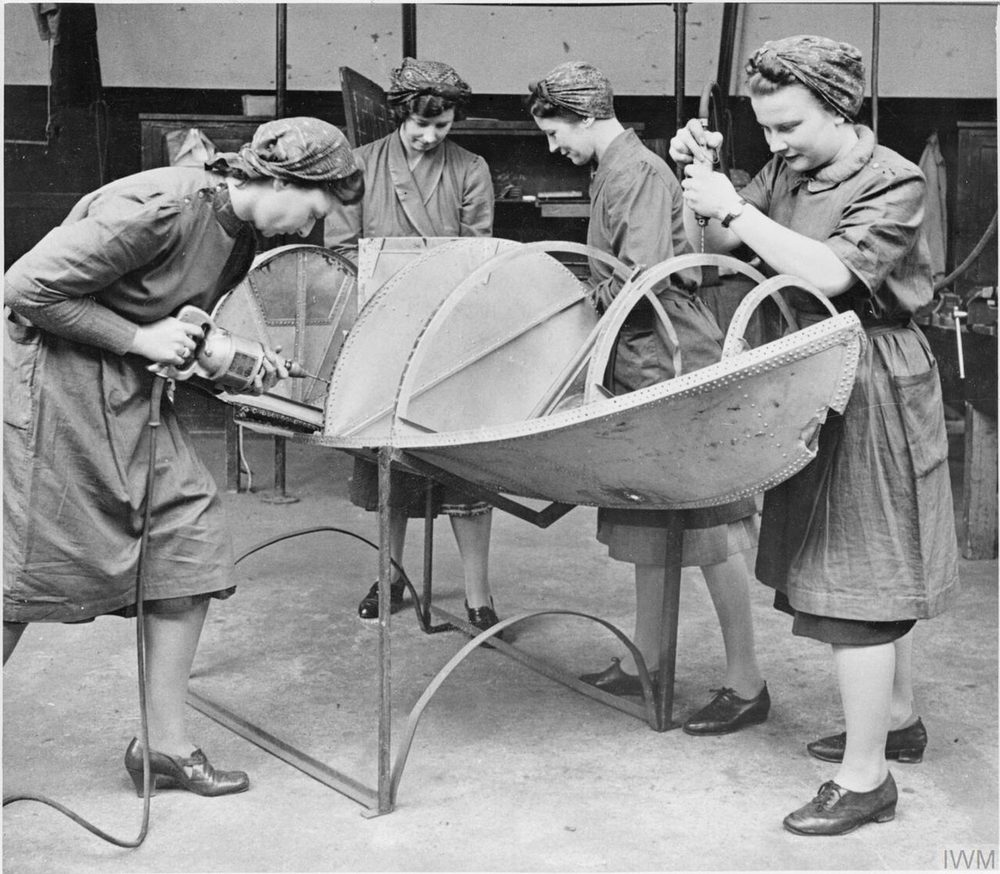

🔍 為什麼會發生第二次世界大戰？
戰爭不是突然發生的，就像火山爆發前，地底下早就在累積能量。 下面四張是真實的老照片，點一點卡片翻到背面，看看是哪些原因讓世界「爆發」了。

📜 不公平的和約
1919 · 點我翻面
💰 經濟大恐慌
1936 · 點我翻面👊 野心家的崛起
1930s · 點我翻面
🙈 大家假裝沒看見
1938 · 點我翻面🌏 在亞洲，戰火其實更早點燃
早在歐洲開戰之前，日本就在 1931 年佔領中國東北（九一八事變），1937 年更全面入侵中國，爆發「中日戰爭」（八年抗戰）。所以對亞洲來說，戰爭開始得更早、也打得更久。

1938 年 · 長城：中國軍隊在長城上抵抗日軍。攝影師沙飛拍下了這張著名的照片。">⚔️ 戰爭怎麼進行？
這場戰爭分成兩大陣營，戰場遍布歐洲、亞洲、非洲和太平洋，是人類歷史上規模最大的戰爭。
🔴 軸心國
德國、義大利、日本
發動侵略、想用武力擴張的一方
🔵 同盟國
英國、法國、蘇聯、美國、中國等
聯合起來對抗侵略的一方
🔍 到底有幾個國家參戰？為什麼查到的數字都不一樣
你會查到「30 幾個」「60 幾個」「幾乎全世界」三種說法。它們沒有互相矛盾， 只是在算不同的東西——這正是讀歷史時最該注意的地方。
- 約 30 幾個國家：真正派出武裝部隊參戰的。英文資料常寫的 「more than 30 countries」指的是這個。
- 50 個以上：正式宣戰的。《聯合國共同宣言》1942 年 1 月由 26 國簽署，到戰爭結束時累積到 47 個政府。 1945 年舊金山制憲會議邀請了 46 個已對德國與日本宣戰的國家， 另外直接邀請 4 個，共 50 國與會，聯合國最後有 51 個創始會員國。
- 幾乎全世界：受到戰爭直接影響（被佔領、被轟炸、被封鎖、被徵用資源）的地區。 英文維基百科現在的寫法就是「Nearly all of the world's countries participated」。
中文資料常見的「61 個國家參戰、84 個國家和地區、20 億人口被捲入」出自蘇聯／中國大陸的統計傳統， 但這些來源多半只註明「據不完全統計」，查不到原始出處，所以本頁不採用。
🕰️ 互動時間軸
點擊每個事件，展開故事與當年拍下的照片。

📏 歷史大軸線（1931–1945）
戰爭在歐洲和亞洲是「同時」進行的兩條故事線！左右滑動軸線，點擊事件看看發生了什麼事。 上排是歐洲戰場，下排是亞洲太平洋戰場。
← 左右滑動看更多 →
🗺️ 會動的戰爭地圖
拉動年份，看看軸心國的地盤怎麼一年一年擴張，又怎麼被打回去。 按 ▶ 可以自動播放；點地圖上的圓點，就能看到那裡發生的事和當年的照片。
※ 地圖用今天的國界畫成，顏色只表示「大概的範圍」。有些國家（例如蘇聯）只有一部分被佔領，這裡沒辦法分開上色喔。
⚙️ 武器與軍事力量
哪一國最強？坦克誰比較厲害？這一頁來認識當時的機器。 不過先記住一件事：這些東西再怎麼精巧，都是被設計出來傷害人的。 而且真正決定勝負的，常常不是最厲害的那一台。
🏭 打仗，其實是在比工廠
德國的坦克品質很好，日本的飛機一開始也很強。但戰爭打久了，比的是「誰能一直造出來」。 看看這兩張圖，你就會明白軸心國為什麼撐不下去。
數字是 1939–1945 年的總產量，取自各國官方統計的常見估計值，已四捨五入。 不同資料來源會有出入，這裡只用來看「差距有多大」。
看數字表格


德國的坦克工廠：德國的坦克做工精細，但幾乎是「一台一台慢慢做」。虎式坦克整場戰爭只造了 1,347 台——蘇聯的 T-34 造了超過 5 萬台。">🔍 武器圖鑑
點照片可以看大圖。每一台後面都有一個「為什麼它這樣設計」的故事。
🚀 這些發明後來變成了什麼？
戰爭逼著人類在六年內想出平常要花幾十年的東西。戰後，同一批技術換了個用途：
- V-2 火箭 → 太空火箭。同一批工程師後來把人送上了月球。
- 雷達 → 氣象預報、飛機和船的導航、機場塔台。
- 破解密碼的機器 → 現代電腦的祖先。你手上的手機是它的後代。
- 加壓座艙 → 現在的客機能飛那麼高，就是靠這個技術。
- 盤尼西林 → 抗生素普及，救了幾億人的命。
同一個發明可以殺人，也可以救人。差別在於使用它的人怎麼決定。
🏠 戰爭時，大家怎麼生活？
打仗的不只是前線的軍人。在後方，每一個家庭的日子都變了樣—— 包括跟你差不多大的小孩。這些照片都是當年真實拍下的。
🎒 如果你是 1941 年倫敦的小學生

出門前要檢查兩樣東西：書包，還有掛在脖子上的防毒面具盒子。 大家怕德國會用毒氣（最後並沒有），但演習還是每週照做。
很多老師去當兵，學生一半被送到鄉下。學校被炸毀了，就借教堂或別人家的客廳繼續上課。

警報一響，全班衝到地下室或最近的防空洞。倫敦大轟炸最兇的時候， 有 15 萬人每天晚上睡在地鐵站的月台上——帶著棉被、水壺，還有人帶書和樂器。

倫敦上空的防空氣球：這些大氣球用粗鋼索綁在地面，逼敵機不敢低飛。飛低才炸得準，所以氣球等於強迫敵機飛高、炸不準。">天空掛滿銀色的大氣球，下面拖著粗鋼索。敵機不敢飛低，炸彈就丟不準。 晚上還有「燈火管制」——所有窗戶都要用黑布遮住，路燈全關，連腳踏車燈都要罩起來。
🍽️ 想吃東西？要先拿出「配給簿」
船運被潛艇攻擊，食物進不來，所以政府規定每個人一週只能買固定的份量。 有錢也沒用——沒有券就買不到。

🧺 一個大人「一整個星期」能買到的量
- 🥓 培根或火腿約 100 公克
- 🧈 奶油約 50 公克
- 🧀 起司約 57 公克
- 🍬 砂糖約 227 公克
- 🥚 蛋1 顆
- 🍵 茶葉約 57 公克
- 🍭 糖果（小孩也一樣）約 340 公克／月
一週一顆蛋。想想看你家一個星期吃掉幾顆？

Make Do and Mend（縫縫補補繼續用）：英國政府的宣導海報。衣服也要配給，破了就補、小了就改，還教大家把舊毛衣拆掉重織。">👩🔧 媽媽們走進了工廠

1941 年 · 英國斯勞：女性在訓練中心學習操作工具機。戰爭期間，英國有數百萬名女性投入工廠、農場、運輸和防空工作。">男人上了戰場，工廠沒有人。於是女性開始做以前被認為「女生不能做」的事： 造飛機、焊鋼板、開卡車、當防空監視員、開飛機把新戰機送到基地。 戰爭結束後，很多人不願意再回到原來的位置——這場戰爭意外地改變了女性在社會上的角色。
🏝️ 那，臺灣呢？

當時臺灣是日本的殖民地，所以是被盟軍轟炸的一方。臺灣人的戰時生活是這樣的：
- 空襲：1944 年底起盟軍密集轟炸，1945 年 5 月 31 日的「臺北大空襲」造成三千人以上死亡。
- 疏開：政府要人們從城市搬到鄉下親戚家，學校也整批遷到山區上課。
- 防空演習：學校和鄰里定期演練，練習提水桶滅火、抬傷患。
- 配給：米、糖、布都要配給。台灣明明產糖，糖卻要憑券買。
- 被徵召：超過 20 萬臺灣人被徵去當兵或當軍伕，很多人被送到南洋，再也沒回來。
🕊️ 戰爭的結果與影響
1945 年戰爭結束了，但世界從此不一樣了。
😢 巨大的代價
這是人類歷史上死傷最慘重的戰爭，全世界大約有 5,000 萬到 8,000 萬人失去生命，其中大多數是平民——就是像你我一樣的普通人。無數城市變成廢墟，無數家庭失去親人。
🕯️ 猶太人大屠殺（Holocaust）

納粹德國因為仇恨，有計畫地迫害和殺害了大約 600 萬猶太人，還有許多其他無辜的人。這段歷史非常沉痛，但我們必須記住它——因為記住，才能保證這樣的事「永遠不再發生」。
有一位叫安妮・法蘭克的猶太女孩，在躲藏時寫下的日記感動了全世界。她寫過一句話：「儘管發生了這一切，我依然相信人心本善。」你長大一點可以讀讀看她的日記。
🌐 聯合國誕生
各國痛定思痛：「不能再讓世界大戰發生了！」1945 年，51 個國家一起成立了聯合國（UN），讓大家有問題用「開會討論」代替「動手打仗」。聯合國到今天仍在為世界和平努力。
🗺️ 世界大洗牌
歐洲強國元氣大傷，美國和蘇聯成為兩大超級強國，後來展開了長達 40 多年的「冷戰」對峙。亞洲和非洲許多殖民地紛紛獨立建國。
臺灣在 1945 年結束了日本 50 年的統治。當時許多臺灣人被徵召去當兵或做工，城市也被盟軍轟炸過——臺灣也是這場世界大戰的一部分。
📖 我們學到了什麼？
仇恨和偏見會帶來可怕的災難；面對不公義，沉默和退讓不能帶來和平；而不同國家的人合作，才能守護世界。和平不是理所當然的，需要每一代人用心守護——包括未來的你！
🏆 挑戰小測驗
你已經完成時光旅行！來測試一下你的歷史功力吧。答錯沒關係，可以回去複習再挑戰！
🎬 影片時間
點一下封面就會開始播放（需要連上網路）。標籤標示適合的年齡， 有 大人陪看 的影片建議和爸爸媽媽一起看，因為裡面會提到比較沉重的內容。
🔗 好玩又可靠的網站
這些都是博物館、學校和歷史學家做的網站，資料可以信任。點了會開新分頁。
🖼️ 照片是哪裡來的？
這個網頁裡的每一張照片都是真實的歷史照片，來自維基共享資源（Wikimedia Commons）。 它們大多已經進入公共領域（版權過期，大家都能自由使用），少數幾張是攝影者用創用 CC 授權分享的。